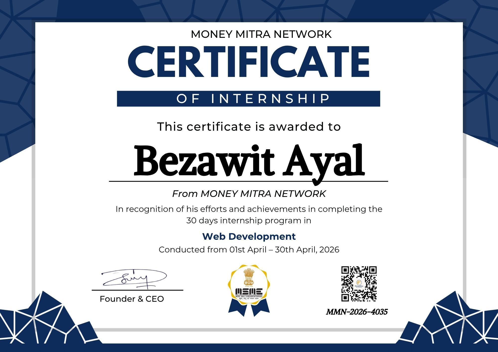

Passionate about cybersecurity, network security, Linux systems, and secure web technologies.
My background and career goals.
I am a Cybersecurity student at Bahir Dar University with a strong interest in network security, ethical hacking, Linux systems, and secure web technologies.
Through academic study, internship experience, and hands-on practice, I continue developing practical cybersecurity and web development skills while working toward a professional career in information security.
Bachelor's Degree in Cybersecurity
Bahir Dar University
Network Security, Linux Administration, Ethical Hacking, Security Analysis
To become a skilled Security Analyst and contribute to building secure digital systems.
Technologies and tools I work with.
TCP/IP, DNS, HTTP, troubleshooting, and network fundamentals.
Command line, file systems, permissions, and system navigation.
Automation scripts, basic security tools, and problem solving.
Shell scripting and Linux task automation.
Host discovery, service enumeration, and network scanning.
Packet analysis, traffic monitoring, and investigation.
Responsive layouts, modern UI design, and web structure.
Interactive interfaces and dynamic web functionality.
A showcase of my web development skills.
BELORA is a responsive fashion storefront website built using HTML, CSS, and JavaScript. The project provides a modern shopping experience with an interactive cart counter, product showcase, and contact form while maintaining a clean and user-friendly design.
Active participant on TryHackMe, developing practical cybersecurity skills through hands-on labs, attack simulations, and defensive security exercises.
Professional learning and achievements.

Successfully completed a 30-day Web Development Internship at Money Mitra Network, gaining practical experience in HTML, CSS, JavaScript, responsive web design, and modern UI development.
View Certificate